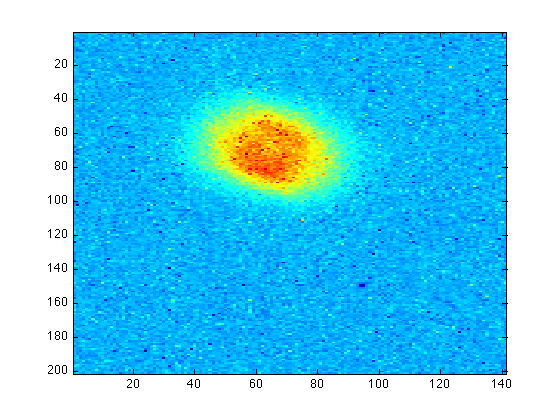
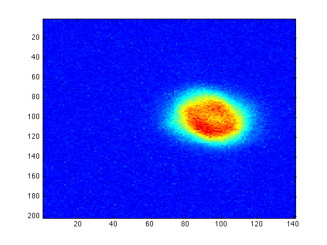
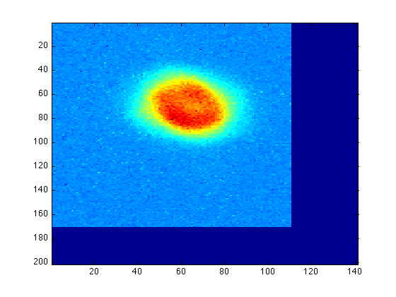

Image Processing: Shifting Images
Contents
Assuming we have two images of the same object, but not aligned properly:
imagesc(im1), imagesc(im2);
|  |  |
Finding the difference in coordinates
You must be careful when choosing the reference points. Here we use the end points of the major axis in the denser (red) region and average over them. We now type ginput to find the coordinates of the rings:
imagesc(im1) [x1, y1] = ginput(2)
x1 = 49.7200 77.0104 y1 = 65.4430 78.3728
Then do the same thing to im2:
imagesc(im2) [x2, y2] = ginput(2)
x2 = 79.6094 108.5242 y2 = 94.2412 111.2851
Assuming we want to keep im1 unchanged and shift im2 to fit im1. Then we calculate the difference in coordinates:
Diffx = x1 - x2
Diffx = -29.8894 -31.5138
Diffy = y1 - y2
Diffy = -28.7982 -32.9123
Averaging over the two points we have
Dx = mean(Diffx)
Dx = -30.7016
Dy = mean(Diffy)
Dy = -30.8553
Remember that the rows are in the y-direction and the columns are in the x-direction, and the pixel indices should be integer. Therefore the number of rows and columns over which im2 must be shifted, are
Nrow = round(Dy)
Nrow = -31
Ncol = round(Dx)
Ncol = -31
The round() function returns value to the nearest integer.
Calling the function 'imshift'
To call the function, type the following command:
imr=imshift(im2,Nrow,Ncol);
Now the shifted im2 (i.e. imr) should be aligned with im1:
imagesc(imr), imagesc(im1);
|  |